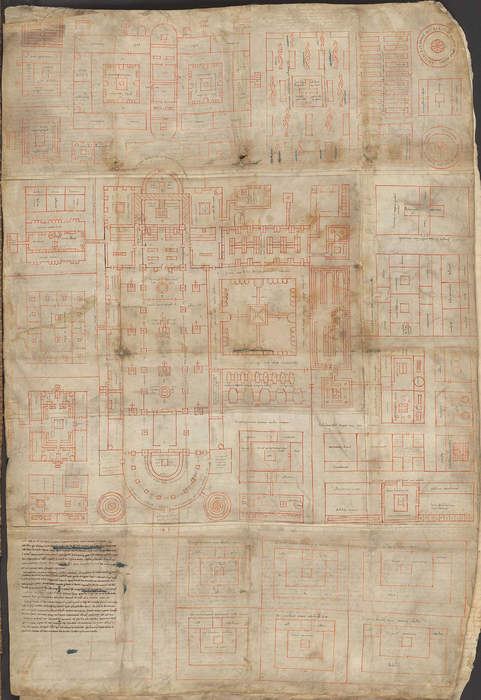
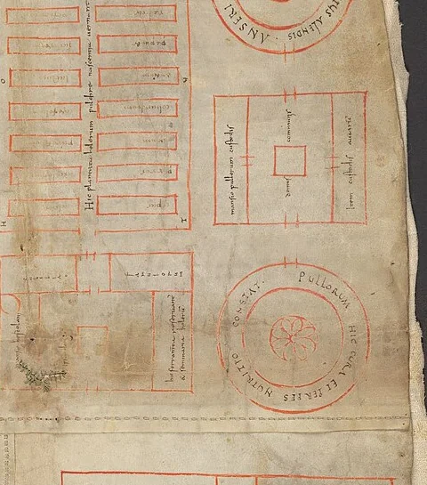
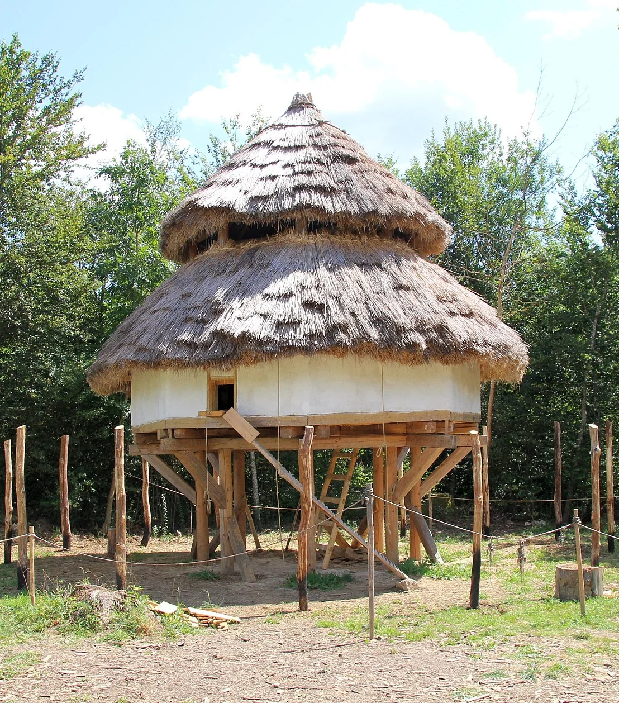
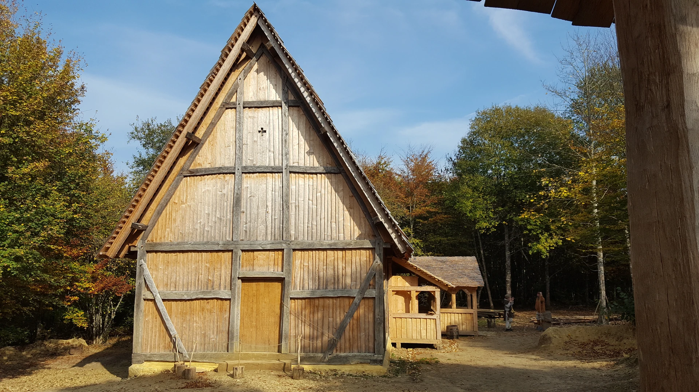

아직 펼치지 않은 카드
기도하고 일하는 사람들 · 5장크트갈렌 수도원 설계도1,200년 전 양피지에 그린 수도원 설계도가 있어요. 그런데 이대로 지은 수도원은 한 번도 없었대요. 지금 누가 이 설계도로 수도원을 짓고 있을까요?1,200년 전에 그린 수도원 지도야! 지금 이대로 짓는 사람들이 있대.
820년대 · 2013년부터라이헤나우 섬 → 장크트갈렌 → 독일 메스키르히
장크트갈렌 수도원 설계도
1,200년 전, 한 수도사가 양피지에 수도원 설계도를 그려 친구 같은 원장에게 보냈어요. “이것으로 그대의 솜씨를 닦으라”는 글과 함께요. 그 말대로 설계도 위를 한 곳씩 걸어 보고, 오늘 그 그림을 손으로 짓는 사람들을 만나 보세요.
아주 옛날 수도원 설계도야. 성당, 병원, 약초밭, 닭집까지 다 그려져 있어. 같이 걸어 볼까?
검수 전 시안이에요(기준서 1판 보탬 11). 설계도의 사실은 하이델베르크 대학 자료와 캄푸스 갈리 누리집을, 건물의 자리는 중세 연구 누리집(medievalists.net)의 설명을 따랐어요. 헌정 글은 학술 자료의 라틴어 옮겨 적기를 이 안내서가 우리말로 옮겼어요. 상상은 ‘눈 감고 상상해 보기’에만 썼어요.
시안 확인용카드 단계 미리 보기
1
설계도 위를 걸어 보기
보덴 호수의 라이헤나우 섬 수도원에서 820년대에 그린 설계도예요. 양가죽 양피지 다섯 장을 꿰매 이어 붙여, 크기가 112×77.5cm예요. 건물이 52채, 붉은 선 곁의 라틴어 설명 글이 333개 적혀 있어요.
설계도 위쪽 가장자리, 묘지 그림 위에는 받는 사람에게 쓴 짧은 편지가 적혀 있어요.
‘다음 곳으로’를 눌러, 서쪽 낙원에서 동쪽 끝까지 설계도 위를 걸어 보세요. 위쪽이 동쪽이에요.

서쪽 낙원두 끝이 둥근 큰 성당회랑병원과 수련자의 집약초밭묘지와 과수원닭과 거위의 집장크트갈렌 수도원 설계도(820년대), 장크트갈렌 수도원 도서관 Cod. Sang. 1092. 위쪽이 동쪽이에요 · 퍼블릭 도메인 · 위키미디어 공용(장크트갈렌 수도원 도서관)
동쪽 끝 닭과 거위의 집까지 왔어요. 설계도 한 장에 기도하는 곳과 일하는 곳, 아픈 이를 돌보는 곳이 함께 그려져 있어요.
“가장 사랑하는 아들 고츠베르트여, 건물들의 자리를 몇 마디 글과 함께 그려 보내오. 이것으로 그대의 솜씨를 닦고, 나의 마음을 조금이나마 알아주오.”
장크트갈렌 설계도의 헌정 글(820년대) · 라틴어 옮겨 적기(하이델베르크 대학 자료)를 이 안내서가 우리말로 옮김
고츠베르트는 816년부터 장크트갈렌 수도원의 원장이었고, 830년에 새 성당을 짓기 시작했어요. 그래서 설계도는 그보다 먼저 그렸다고 봐요. 받는 사람이 같은 이름의 조카 수도사였다고 보는 학자도 있어요.
편지 그대로, 설계도 위를 걸어 보세요. ‘다음 곳으로’를 누르면 한 곳씩 길이 이어져요. 사진에서 위쪽이 동쪽이에요.
아주 옛날 수도원 설계도야. 붉은 선을 따라 한 곳씩 걸어 볼까?
물어보기이 수도원에 산다면, 어디에서 제일 오래 있고 싶어?
2
1,200년 만에 선 닭집
설계도의 설명 글에는 닭의 집, 거위의 집, 그리고 날짐승을 돌보는 사람의 집이 적혀 있어요. 동쪽 끝 채소밭 곁에 둥근 집 두 채와, 그 사이의 네모난 집으로 그려져 있어요.
이 설계도대로 지은 수도원은 없었어요. 그런데 2013년부터 독일 메스키르히의 ‘캄푸스 갈리’에서 이 설계도를 바탕으로 수도원을 짓고 있어요. 기계도, 요즘 연장도 쓰지 않고 모든 일을 손으로 해요.


위의 두 그림을 탭으로 바꿔 보세요. 2024년 여름, 캄푸스 갈리 빈터에도 짚 지붕을 얹은 둥근 닭장이 서 있어요.
캄푸스 갈리는 어느 한때의 장크트갈렌을 그대로 옮기려는 게 아니래요. 9세기에 이 고장에 생겼을 법한 수도원을 짓는 거예요. 돈은 찾아오는 사람들의 입장료와 후원, 지원금, 메스키르히시가 함께 마련해요.
설계도에 그려진 둥근 닭집이랑, 지금 진짜로 지은 둥근 닭장이야!
물어보기닭집은 왜 둥글게 지었을까?
3
솜씨를 닦는 손
캄푸스 갈리의 나무 성당이에요. 나무를 베고 다듬어 손으로 지었어요. 낙원 정원의 나무 십자가 하나에 700시간이 들었고, 곳간 한 채에는 지붕 각목 1,500m와 참나무 못 700개가 들어가요.
2019년 한 해에만 9만 1,661명이 이 일터를 찾아왔어요. 겨울에는 문을 닫고, 다음 철은 2027년 3월 23일에 시작해요.

1,200년 전 편지는 이 설계도로 ‘솜씨를 닦으라’고 했어요. 지금 그 그림을 펼쳐 놓고 솜씨를 닦는 것은, 메스키르히 숲속 일꾼들의 손이에요.
나무를 베고 다듬어서 손으로 성당을 지었대. 기계 없이!
물어보기기계 없이 손으로만 집을 짓는다면, 무엇부터 할까?
눈 감고 상상해 보기
820년대 어느 날, 장크트갈렌의 원장 방이에요. 고츠베르트가 라이헤나우에서 온 양피지를 책상 가득 펼쳐요. 붉은 선을 손가락으로 따라가요. 여기가 성당, 여기가 회랑, 여기는 병원, 저 끝은 닭과 거위의 집. 아직 아무것도 서 있지 않은 땅 위에, 그림 속 수도원이 한 채씩 일어서요.
눈을 감아 봐. 커다란 양피지 지도가 책상에 펼쳐져 있어. 손가락으로 붉은 선을 따라가 봐. 성당, 약초밭, 닭집까지!
나의 자리
오래 그려만 두고 아직 짓지 못한 ‘설계도’가 내게 있나요? 오늘 한 장의 돌을 놓는다면 무엇일까요?
꿈의 집 설계도를 그려 볼까?
마음에 닿는 한 줄을 고르거나 직접 써 보세요. 한 줄을 남기면 이 자리의 도장이 찍혀요. 이 기기에만 저장돼요.
더 깊이
궁금한 칸만 펼쳐 읽어도 괜찮아요.
알고 보면
두 사람의 글씨 설계도의 설명 글은 두 사람이 썼다고 해요. 한 사람은 라이헤나우 수도원의 사서 레긴베르트이고, 다른 한 사람은 그의 제자 발라프리트 스트라보였을 수도 있대요.
양의 가죽 유전자(DNA)를 살펴보니, 설계도 양피지는 양가죽으로 만든 것이었어요.
뒷면의 성인전 12세기에 누군가 설계도 뒷면에 마르티노 성인의 전기를 베껴 썼어요. 설계도는 그 뒤로 성인전과 함께 전해졌어요.
맥주와 빵 설계도에는 맥주를 빚는 집이 세 곳이에요. 수도사들, 귀한 손님들, 순례자와 가난한 이들을 위한 것이고, 빵 굽는 곳과 함께 있어요.
함께 보면 좋은 카드 베네딕도 규칙서가 처음 쓰인 몬테카시노 수도원, 바위 위에서 900년을 이어 온 멜크 수도원 이야기도 이 세트에 있어요.
기록마다 다른 점
그린 때 하이델베르크 대학 자료는 825~826년 무렵, 캄푸스 갈리 누리집은 830년 전이라고 적어요. 앞면 이야기는 820~830년 무렵이에요.
건물 수 하이델베르크 대학 자료와 캄푸스 갈리 누리집은 52채, 앞면 이야기는 약 40개의 평면이라고 적어요. 무엇을 한 채로 세느냐에 따라 달라요.
무엇을 위한 그림? 실제로 지으려던 설계도인지, 모범으로 그린 그림인지, 공부를 위한 연습인지는 아직 정해지지 않았어요. 편지에는 지으라는 말이 없고, ‘솜씨를 닦으라’고만 적혀 있어요.
받는 사람 대부분은 고츠베르트 원장(816~837년)으로 보지만, 같은 이름의 조카 수도사로 보는 학자도 있어요.
직접 가 보기
확인한 날 · 2026년 11월 18일 · 바뀌기 쉬운 정보라 정기적으로 다시 확인해요
원본 설계도는 스위스 장크트갈렌 수도원 도서관에 있어요. 스위스 e-codices 누리집에서 아주 크게 볼 수 있어요.
캄푸스 갈리(독일 메스키르히)는 지금 겨울 쉼이고, 다음 철은 2027년 3월 23일에 시작해요. 여는 때와 표는 누리집에서 확인해 주세요.
설계도 위를 끝까지 금박
설계도 위 일곱 곳을 끝까지 걸으면 금박이 입혀져요.
설계도 위 일곱 곳을 끝까지 걷기
설계도 이야기를 끝까지 채색
아이와 함께 끝까지 보면 카드가 채색돼요.
아이와 함께 ‘영화처럼 보기’를 끝까지 보기
근거 보기 (8)
- 요나스 나르히, 「장크트갈렌 수도원 설계도: 설계도, 모범 그림, 공부 연습?」(하이델베르크 대학 역사학과) — 825~826년 무렵, 라이헤나우, 112×77.5cm, 양가죽 다섯 장을 비단실로 이음, 건물 52채·설명 글 333개, 헌정 글 라틴어 옮겨 적기와 베르신의 독일어 번역, 받는 이는 고츠베르트 원장(816~837) 또는 조카, 뒷면에 12세기 마르티노 성인전, 쓰임새는 열린 물음
- 캄푸스 갈리 「설계도」 — 830년 전 라이헤나우 섬, 장크트갈렌 수도원 도서관 소장, 다섯 장을 꿰맴, 양가죽(DNA), 52채, 레긴베르트와 발라프리트 스트라보(?)의 글씨, 고츠베르트에게 바침, 830년 새 성당 시작, 베네딕도 규칙에 맞는 이상적인 배치, 닭의 집·날짐승 돌보는 이의 집·거위의 집
- 캄푸스 갈리 첫 쪽 — 9세기 수단으로 기계 없이, 다음 철 2027년 3월 23일, 나무 십자가 700시간, 곳간 각목 1,500m·참나무 못 700개, 2019년 방문객 91,661명
- 캄푸스 갈리 「우리는」 — 비영리 단체 ‘카롤링 수도원 도시’, 입장료·후원·지원금·메스키르히시, 모든 일을 손으로, 어느 한때의 장크트갈렌이 아니라 9세기 이 고장에 생겼을 법한 수도원
- 메디벌리스츠(medievalists.net) 「장크트갈렌 설계도」(2022) — 두 끝이 둥근 성당, 서쪽 낙원·동쪽 낙원, 남쪽 회랑, 2층 숙소, 동쪽의 데우는 방, 북쪽 날개 곁 필사실과 그 위 도서관·일곱 창과 책상, 동북쪽 병원, 의사의 집과 약초밭, 수련자의 회랑과 반씩 나눈 성당, 묘지와 과수원, 채소밭 곁 닭과 거위, 서쪽의 짐승 우리, 맥주 집 세 곳과 빵집
- MIT 공개 강의 「세계 건축사」 9강 자료(2012) — 붉은 잉크, 다섯 조각을 꿰맨 양피지, 짙은 갈색 글씨, 헌정 글은 동쪽(위쪽 가장자리, 묘지·과수원 위), 헌정 글 영어 번역
- 로버트 윌리스, 「9세기 장크트갈렌 수도원의 옛 설계도」(『고고학 저널』 5권, 1848) — 동남쪽 구석, 성당과 병원에서 멀리, 똑같은 둥근 마당 둘, ‘Pullorum…’(닭)·‘Anseribus…’(거위) 글, 그 사이 돌보는 이들의 두 칸 집
- 위키미디어 공용 파일 설명(API로 확인): 설계도 앞면(9세기, 퍼블릭 도메인) · 캄푸스 갈리 닭장(2024년 8월) · 나무 성당(2018년 10월)
그림·사진·소리 출처
‘처음 만나는 기독교 문화’의 깊은 카드예요. 카드 단계와 남긴 글은 이 기기에만 저장돼요.